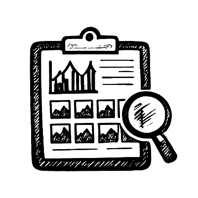

Image datasets are rarely as clean or consistent as they appear. Pixel Patrol analyses your images and generates a shareable, interactive browser report - file and image metadata, pixel statistics, quality metrics, and per-dimension slice statistics. Get immediate results, compare conditions, catch outliers, verify batch consistency, and get the full picture before you use your dataset.
Open Report File
Or pass a URL:
viewer/?data=https://…/report.parquet
Your data stays local - nothing is uploaded.
Four steps from folder to insight.
Point Pixel Patrol to your image folder.
Files are read in parallel and results are saved to a Parquet file.
Holds metrics and statistics per image.

Browser-based interactive dashboard. Group, filter, inspect.